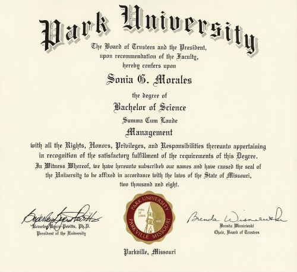
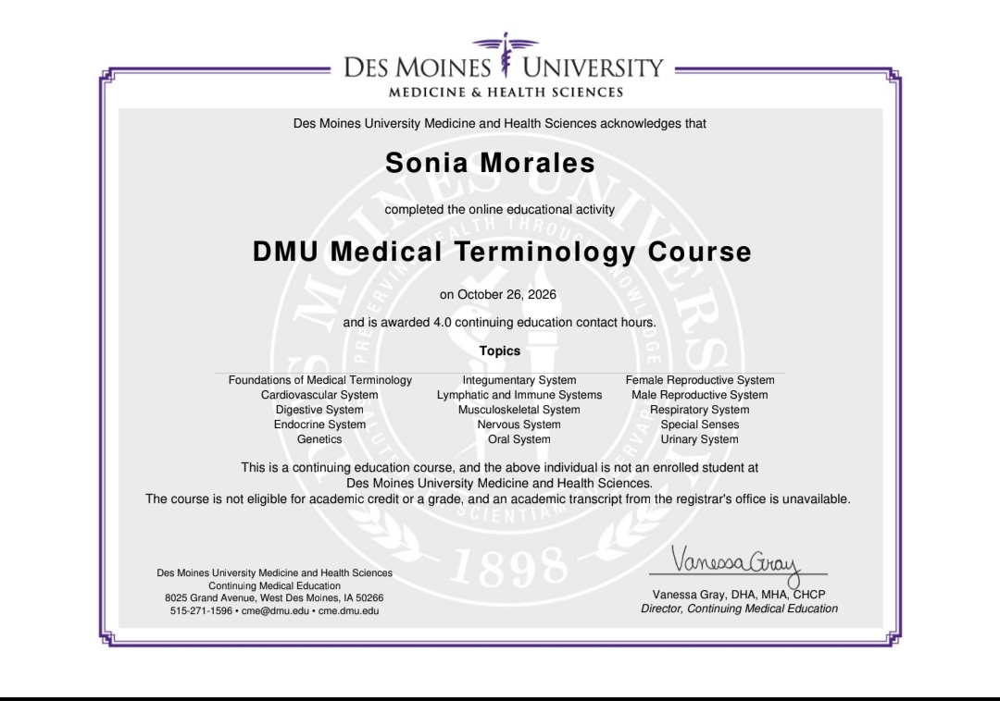
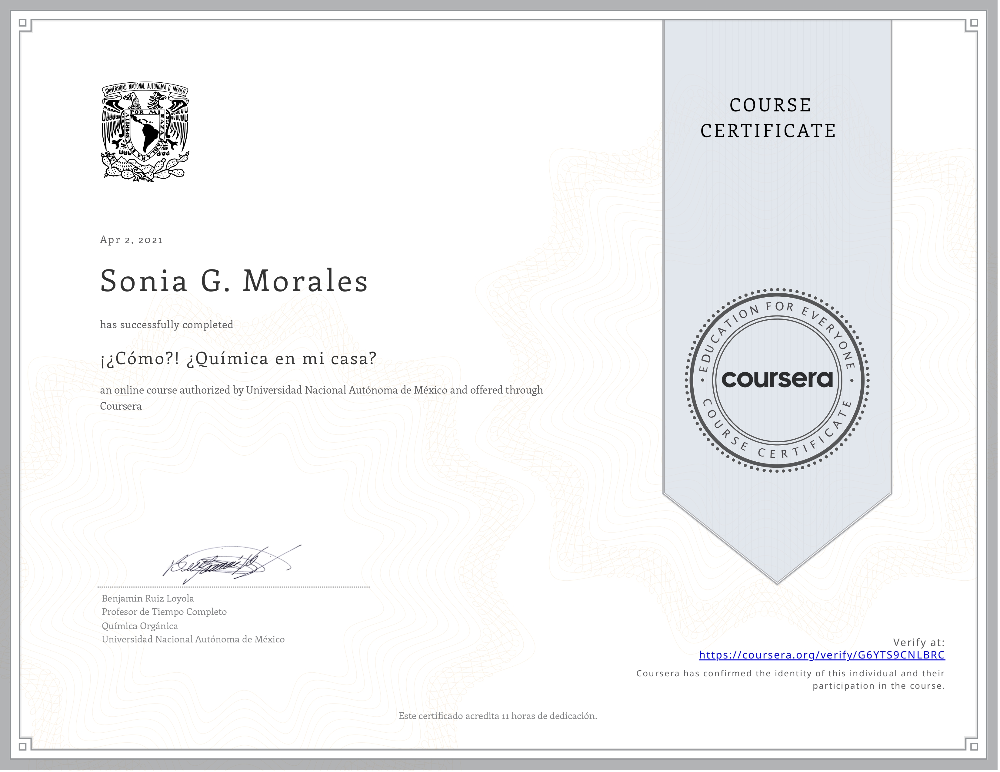

Skills
Technical Tools
- Microsoft Office Suite (Word, Excel, PowerPoint, Visio, Outlook)
- Adobe Acrobat
- Laserfiche
- Energov
- Meeting software (Teams, GoTo, and Zoom)
Professional Expertise
- Project Management Expertise
- Process Improvement and Optimization
- Efficiency Enhancement and Productivity Improvement
- Technology Mastery and Innovation
- Organizational and Administrative Skills
- Data Management
- Teamwork and Collaboration Skills
Work Experience
Office Aide III — City of Temecula February 2024 – June 2026
- Provided customer service to contractors and business owners by answering inquiries, assisting with inspection scheduling, and guiding them through permit-related processes.
- Supported contractors and business owners by explaining inspection requirements, timelines, and next steps.
- Coordinated and tracked fire prevention inspections in Microsoft Outlook and EnerGov for 8 Fire Department inspectors for residential and commercial projects.
- Reviewed older permits on EnerGov to ensure they were finalized in system which were then routed to Laserfiche for easier records retrieval.
- Handled calls from contractors and business owners to schedule fire prevention inspections thereby enabling businesses to meet compliance requirements and move toward opening.
- Collected and attached foam letters to permits for 545 residential lots that confirm the compatibility of the foam insulation with sprinkler piping and reduced the existing backlog.
Executive Assistant — America's Christian Credit Union June 2021 - January 2023
Managed administrative responsibilities for 8 members of the Chief Officer Group which include:
- Facilitating meeting scheduling process to ensure quorum of committee members.
- Preparing Powerpoint presentations for monthly Board meetings thereby keeping Board informed of credit union policies and strategic initiatives.
- Significantly improving meeting minutes turnaround time for monthly Board meetings, quarterly Credit Union Service Organization meetings, quarterly Supervisory meetings, Annual Member meeting, and Strategic Planning utilizing Dragon transcription software thereby enhancing productivity and efficiency.
- Coordinating travel arrangements for Board and Chief Officer Group for various conferences.
- Producing and posting board packets for 12 committee members on Board portal, allowing them to access information within 72 hours of Board meetings.
- Ensuring 24-hour turnaround processing time for expense reports for 4 corporate credit cards.
- Streamlining the onboarding/offboarding processes for employees, ensuring they receive name plates and tags, business cards, and desk keys upon start date.
- Reducing turnaround time on meeting minutes signatures from 7 business days to 2 business days, or 71%, by using DocuSign.
- Streamlining the key management process by issuing key boxes to department supervisors and managers.
Executive Administrative Assistant — FirstLight Federal Credit Union July 2000 - June 2021
Managed administrative responsibilities for 5 members of Executive Management which include:
- Facilitating meeting scheduling process to ensure quorum of committee members.
- Distributing minutes within a 24-hour turnaround time for monthly Board Asset Liability Committee meetings, quarterly Foundation and IT Steering Committee meetings.
- Performing high-level analytical work by providing data-driven summaries of key economic indicators to the Chief Financial Officer in preparation for Asset Liability Committee meetings.
- Coordinating travel arrangements for Executive, Board, Senior Management, and other staff for various conferences.
- Streamlining travel approval process for Executive and Senior Management as well as Board and Supervisory members by implementing a travel request form.
- Streamlining board packet production via the use of an online Board portal thereby allowing access to information on-demand.
- Ensuring 24-hour turnaround processing time for expense reports for 4 Executive Management members using Certify expense report software.
- Maintaining and reconciling Executive and Board travel budget to stay within the allotted expenses for travel.
- Leveraging problem-solving skills during member interactions in person or via call.
Organizational Projects
Participated in organizational projects such as Online Banking, Paycheck Protection Program, Core Conversion, Quantivate Contract Management, Laserfiche Process Optimization, and Survey Digitization, ensuring successful outcomes and improved experiences for employees and members.
Online Banking
Led project team meetings, reviewed software issues, and monitored progress during Online Banking project to provide a better member experience.
Paycheck Protection Program
Reviewed and prepared business loan applications totaling more than $500,000, ensuring accurate data and successful delivery of necessary funds to businesses to compensate their staff during Covid.
Core Conversion
Ensured accurate data transfer and resolved system issues during Core Conversion project to provide a better member experience.
Quantivate Project
Implemented a contract management and tickler system for contract renewals using Quantivate software, preventing missed contract renewals by responsible parties.
Laserfiche Process Optimization
Streamlined the Field of Membership account opening process using Laserfiche, significantly reducing approval or denial time by 67%.
Closed Account Survey Digitization
Reduced the number of closed account surveys physically mailed per month by 90% using SurveyMonkey.
Education
Park University - El Paso, TX
Bachelor of Science in Management
Summa Cum Laude

Professional Development
Des Moines University
Medical Terminology Certificate of Completion

Universidad Nacional Autónoma de México
Chemistry Course Certificate of Completion (via Coursera)
Core Topics Covered:
- Sanitation chemistry, soaps, analgesics (aspirin), and therapeutics.
- Natural, synthetic, and biodegradable polymers and surface coatings.
- Food organic chemistry and historical/modern preservation methods.
- Ecological recycling, material recovery, and hazardous waste disposal.
